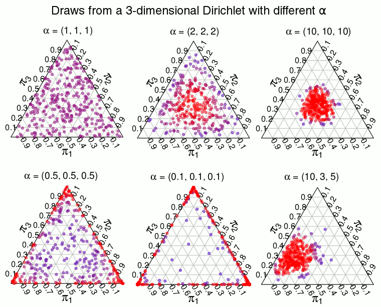
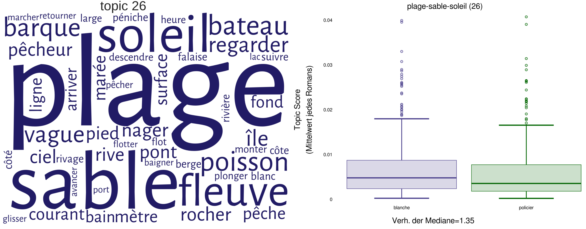
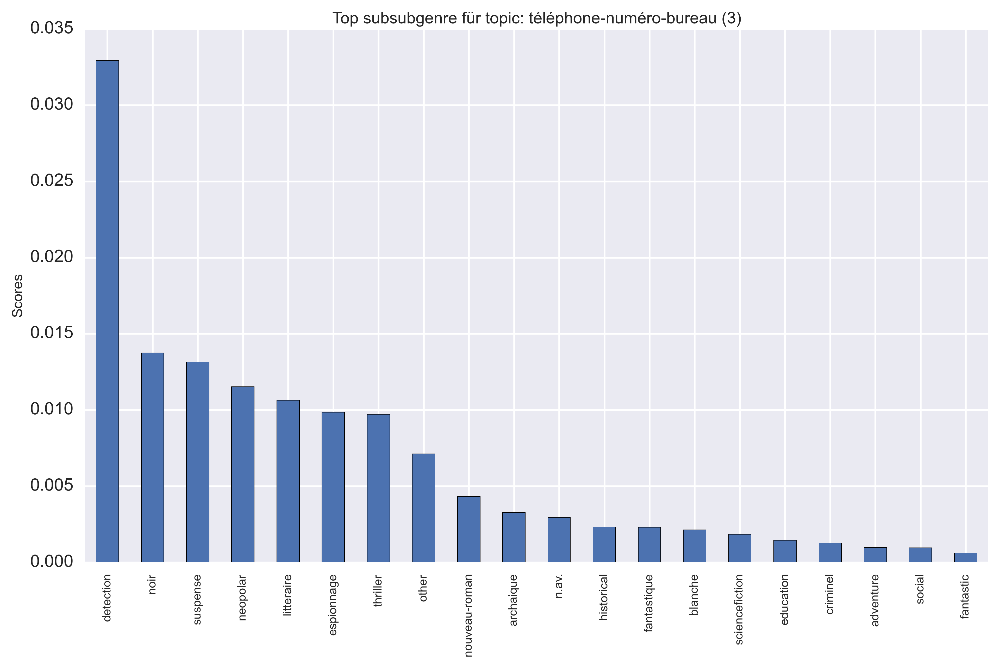
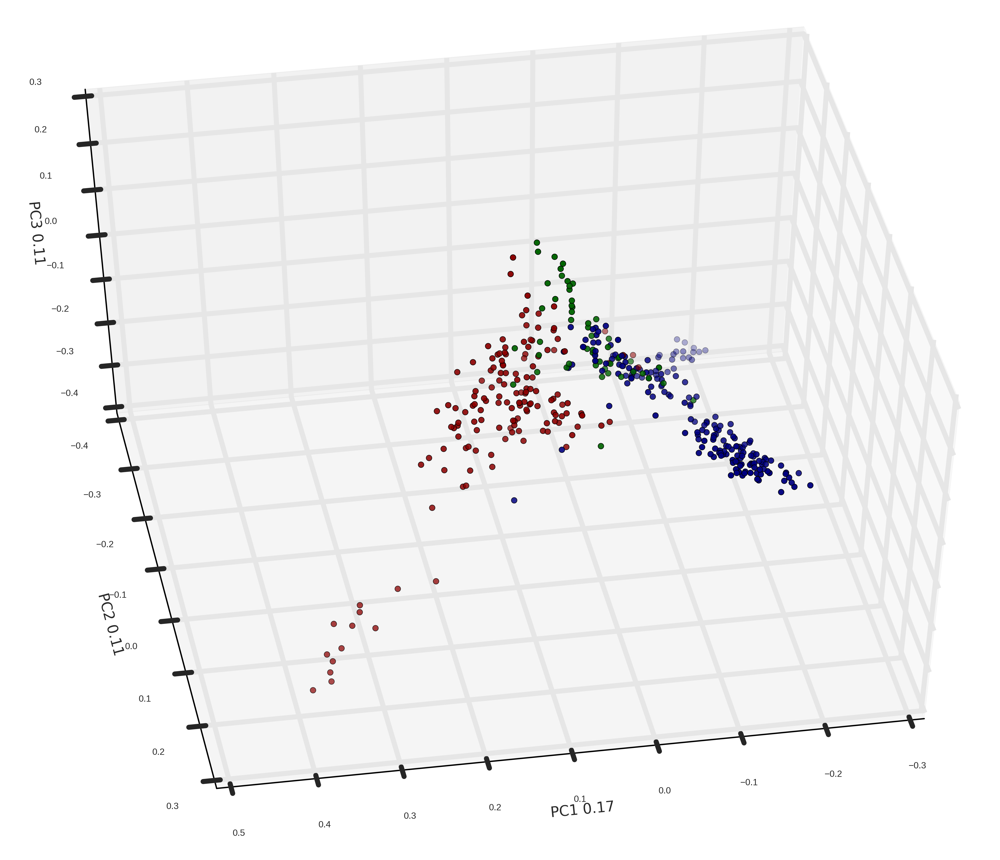

<!doctype html>
<html lang="en">
<head>
<meta charset="utf-8">
<!-- CUSTOMIZE THIS! -->
<title>Riga 2019</title>
<meta name="author" content="Christof Schöch">
<!-- END -->
<meta name="description" content="Slides">
<meta name="apple-mobile-web-app-capable" content="yes">
<meta name="apple-mobile-web-app-status-bar-style" content="black-translucent">
<meta name="viewport" content="width=device-width, initial-scale=1.0, maximum-scale=1.0, user-scalable=no, minimal-ui">
<link rel="stylesheet" href="css/reveal.css">
<link rel="stylesheet" href="css/theme/simple.css" id="theme">
<!-- Code syntax highlighting -->
<link rel="stylesheet" href="lib/css/zenburn.css">
<!-- Printing and PDF exports -->
<script>
var link = document.createElement( 'link' );
link.rel = 'stylesheet';
link.type = 'text/css';
link.href = window.location.search.match( /print-pdf/gi ) ? 'css/print/pdf.css' : 'css/print/paper.css';
document.getElementsByTagName( 'head' )[0].appendChild( link );
</script>
<!--[if lt IE 9]>
<script src="lib/js/html5shiv.js"></script>
<![endif]-->
</head>

<body>
<div class="reveal">
<div class="slides">
<section data-markdown="" data-separator="^\n---\n" data-separator-vertical="^\n--\n" data-charset="utf-8">
<script type="text/template">

<!-- THIS IS WHERE THE CONTENT GOES! -->
<!-- Any section element inside of this container is displayed as a slide -->


## Distributional Semantics and Topic Modeling: Theory and Application
<br/>
<hr/>
<br/>
<br/>
<p><b><a href="http://www.digitalhumanities.lv/bssdh/2019/">Baltic Summer School of Digital Humanities: <br/>Essentials of Coding and Encoding
</a></b><br/>Riga, July 2019</p>
<br/>
<hr/>
<p>Christof Schöch<br/>(TCDH, Univ. of Trier, Germany)</p>
</img>&nbsp;&nbsp;&nbsp;&nbsp;&nbsp;&nbsp;&nbsp;</img></p>


---
## Overview
<br/>
1. [Introduction](#/2) 
1. [Distributional Semantics: Principles and Methods](#/3) 
2. [What are Word Embeddings?](#/4) 
2. [What is Topic Modeling? Examples](#/5) 
2. [Interpreting Topic Models: An Example](#/6)
3. [Topic Models: the Theory](#/7)
3. [A Topic Modeling pipeline](#/8)
4. [First steps doing Topic Modeling](#/9)
5. [Advanced issues in Topic Modeling](#/10)


---
# Introduction

--
## About this workshop 
<br/>
* Slides available online: https://christofs.github.io/riga/#/


--
## About myself 
<br/>
* Professor of Digital Humanities
* Not a computer scientist, not a statistician
* French literary scholar by training
* Interests in corpus building and quantitative text analysis
* see: https://christof-schoech.de/en 
 

--
## About you: raise your hand if...
<br/>
* ... you are a literary scholar
* ... you are a historian
* ... you are a sociologist
* ... you are a (computational / corpus) linguist
* ... you are a computer scientist
* ... you are a digital humanist
* ... you are a librarian
* ... you consider yourself to be a local


---
# Distributional Semantics: Principles and Methods

--
## Basic intuition about distributional semantics
<br/>
* Her friend's ... was located on the second floor of the house. 
* "room" ?
* "apartment" ?
* "balcony" ?
* "cat" ?

--
## What does this example tell us?
<br/>
* We can rank the likelihood of these words in the given context
* We use world knowledge, but also linguistic competency, for this
* Computers can learn this too, based on cooccurrence patterns
* That's how distributional semantics works

--
## Basic idea
<br/>
* The meaning of words depends on their context <!-- .element: class="fragment" data-fragment-index="1" -->
* Words frequently appearing in similar contexts have similar meanings <!-- .element: class="fragment" data-fragment-index="2" -->


---
# What are Word Embeddings? 

--
## Two Models
<br/>
* French Wikipedia <!-- .element: class="fragment" data-fragment-index="1" -->
    * 1.8 million articles, 750 million words
    * skip-gram model, 300 dimensions 
* French 20th-century novel <!-- .element: class="fragment" data-fragment-index="2" -->
    * 1200 novels, 75 million words
    * skip-gram model, 300 dimensions
    * tokens: "lemma_pos"

--
## Similarity


--
## Similar Words Query
<br/>
(Wikipedia)
```
Query:   ['poésie_nom', 10]
Result:  poétique_adj     0.841
         poème_nom        0.790
         prose_nom        0.733
         littérature_nom  0.715
         poète_nom        0.704
         poétique_nom     0.701
         poésie_nam       0.700
         anthologie_nom   0.695
         littéraire_adj   0.655
         sonnet_nom       0.651
```

--
## Similarity Query
<br/>
(Wikipedia)
```
Query: ['prose_nom', 'littérature_nom']
Result: 0.511518681366

Query: ['poésie_nom', 'littérature_nom']
Result: 0.714615326722
```

--
## Evaluation
<br/>
* Method: Using a "find-the-wrong word"-task <!-- .element: class="fragment" data-fragment-index="1" -->
* Lists of similar words: <!-- .element: class="fragment" data-fragment-index="2" -->
    * vert, bleu, jaune, rouge, orange
    * argent, billet, monnaie, portemonnaie, payement
* Generate lists with an error <!-- .element: class="fragment" data-fragment-index="3" -->
    * vert, bleu, argent, jaune, rouge  

--
## Results: accuracy
<br/>
* Wikipedia model: 90% accuracy
* French novel model: 79.5% accuracy


--
## Word Embeddings<br/>for Topic Modeling

--
## Topic Modeling
<a href="img/wordle_tp002.png"></a>

--
## Coherence Assessment: Mallet Diagnostics

--
## Coherence Assessment: Palmetto


--
## Challenges
<br/>
* Mallet diagnostics are only intrinsic to the data
* Palmetto requires you to build an adequate index

--
## WEM-based coherence measure
<a href="img/roman20_topic-coherences.svg"></a>


--
## Evaluation
<br/>
Correlation between WEM-based<br/> coherence and Mallet diagnostics<br/>
(Pearson's R, p-value)
<br/>
<br/>
* mtuniformdist, 0.536, 9.22e-09
* mtcoherence, -0.004, 0.970
* mtexclusivity, 0.117, 0.246
<br/>
<br/>http://mallet.cs.umass.edu/diagnostics.php

--
## (c) Word Embeddings<br/>for Sentiment Analysis

--
## Challenges 
<br/>
* An important branch of Sentiment Analysis<br/>requires an Emotion Lexicon <!-- .element: class="fragment" data-fragment-index="1" --> 
* These lexica usually have poor coverage<br/>(e.g. NRC: 14k words) <!-- .element: class="fragment" data-fragment-index="2" -->
* Many of them also only provide ternary information<br/>(positive, negative, neutral) <!-- .element: class="fragment" data-fragment-index="3" -->
* Combining WEM and Emotion Lexica could<br/> improve both resources <!-- .element: class="fragment" data-fragment-index="4" -->


--
## Axes of meaning (Ryan Heuser)

<br/>
(concrete vs. abstract)


--
## Axes of meaning (Ryan Heuser)

<br/>
(correlation with contemporary annotated data)


--
## Axes of meaning


--
## Axis query
<br/>
(French novels)
```
Axis: [["bonheur", "joie"],          # positive
       ["malheur", "tristesse"]]     # negative

Query:   ange
Result:  0.0875

Query:   monstre
Result   -0.1407
```

--
## Relation of words in semantic dimensions
<a href="img/roman20_words-2dim_nom_labels.svg"></a>


--
## Extend and adapt sentiment lexica
<a href="img/figure-5_sentiments.png"></a>


--
## Workflow
<br/>
* Retrieve 2000 most frequent nouns from WEM <!-- .element: class="fragment" data-fragment-index="1" -->
* Query SentiWordNet for the sentiment scores <!-- .element: class="fragment" data-fragment-index="2" -->
* 158 out of 2000 (or 7.9%) don't have a score <!-- .element: class="fragment" data-fragment-index="3" -->
* Retrieve the word vectors for each of the nouns <!-- .element: class="fragment" data-fragment-index="4" -->
* Use the 1842 nouns which have both a vector<br/> and a SWN score as training data <!-- .element: class="fragment" data-fragment-index="5" -->
* Use a regression task to predict SWN scores<br/> for the 158 words <!-- .element: class="fragment" data-fragment-index="6" --> 

--
## Newly-predicted (positive)
<br/>
* mérite	0.224
* ange	0.191
* aise	0.168
* sérieux	0.168
* merci	0.163
* savant	0.162
* parler	0.157
* seul	0.152
* remplacé 0.150
* envie	0.141
* rire	0.137

--
## Newly-predicted (negative)
<br/>
* fracas	0.294
* injure	0.292
* coupable	0.221
* vertige	0.211
* cesse	0.203
* tel	0.180
* blessé	0.157
* suite	0.156
* merci	0.153
* mélange	0.149
* envie	0.146


--
## Evaluation
<br/>
* Correlation between existing scores and <br/>the prediction for these same scores: 0.59

--
## References

<small>

* Blei, David M. „Probabilistic Topic Models“. Communications of the ACM 55, Nr. 4 (2012): 77. doi:10.1145/2133806.2133826.
* Goldberg, Yoav, und Omer Levy. „word2vec Explained: deriving Mikolov et al.’s negative-sampling word-embedding method“. arXiv.org, 2014. http://arxiv.org/abs/1402.3722.
Heuser, Ryan. „Word Vectors in the Eighteenth Century“. In Digital Humanities 2017: Conference Abstracts, 256–60. Montréal: McGill University & Université de Montréal, 2017.
* Mikolov, Tomas, Kai Chen, Greg Corrado, und Jeffrey Dean. „Efficient Estimation of Word Representations in Vector Space“. arXiv.org, 2013. http://arxiv.org/abs/1301.3781.
* Pennington, Jeffrey, Richard Socher, und Christopher D. Manning. „Glove: Global vectors for word representation“, 2014. doi:10.1.1.671.1743.
* Turney, Peter T., und Patrick Pantel. „From Frequency to Meaning: Vector Space Models of Semantics“. Journal of Artificial Intelligence Research 37 (2010): 141–88. https://arxiv.org/abs/1003.1141.
* Widdows, Dominic. Geometry and meaning. CSLI lecture notes, no. 172. Stanford CA: CSLI Publications, 2004.

</small>


--
## Bonus slides

--
## CBOW Model
<a href="img/cbow-model.png"></a>

--
## Projection
<a href="img/tsne-plot_topn-nom-5800_some-labels.svg"></a>

--
## Comparing models (novels vs. Wikipedia)
<a href="img/figure-6_sens17.png"></a>


---
# What is Topic Modeling?

--
# (a) Getting started


--
## Topic Modeling: basic idea
* Works on the basis of (large) collections of documents <!-- .element: class="fragment" data-fragment-index="1" -->
* Each document is understood as a mixture of topics <!-- .element: class="fragment" data-fragment-index="2" -->
* The purpose is to discover thematic trends and patterns <!-- .element: class="fragment" data-fragment-index="3" -->
* Discovered through generative probabilistic modeling <!-- .element: class="fragment" data-fragment-index="4" -->


--
## Usage scenarios
* Information Retrieval: Search not for individual terms, but themes / semantic fields <!-- .element: class="fragment" data-fragment-index="1" -->
* Recommender Systems: Recommend similar journal articles etc. to users <!-- .element: class="fragment" data-fragment-index="2" -->
* Exploration of text collections: what is an email or newspaper corpus about? <!-- .element: class="fragment" data-fragment-index="3" -->
* Research questions from literary studies, cultural studies, history: topics across authors, genres, time periods <!-- .element: class="fragment" data-fragment-index="4" -->

--
## Explorative Visualization
<p><a href="http://signsat40.signsjournal.org/topic-model/#/model/grid"></img></a></p>
<p>Signs at 40</p>


--
## Existing Studies
* Cameron Blevins: "Topic Modeling Martha Ballard's Diary" (2010): diary <!-- .element: class="fragment" data-fragment-index="1" -->
* Ted Underwood und Andrew Goldstone (2012): "What can topic models of PMLA teach us...": history of a discipline <!-- .element: class="fragment" data-fragment-index="2" -->
* Lisa Rhody, "Topic Modeling and Figurative Language" (2012): ekphrasis in poetry	 <!-- .element: class="fragment" data-fragment-index="3" -->
* Matthew Jockers, Macroanalysis (2013): novel, nationality, gender <!-- .element: class="fragment" data-fragment-index="4" -->
* Ben Schmidt: "Typical TV episodes" (2014): TV shows; temporal development <!-- .element: class="fragment" data-fragment-index="5" -->
* Christof Schöch, "Topic Modeling Genre" (2017): drama, subgenres <!-- .element: class="fragment" data-fragment-index="6" -->


--
# (b) How does a topic model look like?

--
## Words, Topics, Documents
<p></img></p>
<p>(David Blei, "Probabilistic Topic Models", 2012)</p>

--
## On a practical level
* A topic is a group of words with some (semantic) relation (e.g., common theme) <!-- .element: class="fragment" data-fragment-index="1" -->
* Each topic is made up of words of varying importance and relevance to the topic <!-- .element: class="fragment" data-fragment-index="2" -->
* Each document is made up of several topics in various proportions <!-- .element: class="fragment" data-fragment-index="3" -->

--
## On a technical level
* A topic model is an abstract representation of all topics and documents in a collection <!-- .element: class="fragment" data-fragment-index="1" -->
* A topic is a probability distribution over words <!-- .element: class="fragment" data-fragment-index="3" -->
* A document is a probability distribution over topics <!-- .element: class="fragment" data-fragment-index="4" -->
* The Dirichlet distribution (in LDA) describes the topic mixture distribution of the model <!-- .element: class="fragment" data-fragment-index="5" -->

--
## Words in topic distribution
<p></img></p>
<p>(Each word has a score in each topic; here ordered by topic/rank)

--
## Topics in document distribution
<p></img></p>
<p>(Each topic has a score in each document; ordered by document)

--
## Dirichlet distributions
<p><a href="img/dirichlet_plot.png"></img></a></p>
<p>(Describe the topic mixture distributions of the model)<br/>(Here several possible distributions with three topics)</p>

<!--
--
## Dirichlet distributions for both
<p></img></p>
<p>(Describe the topic and word mixture distributions of the model)<br/>(Here two possible distributions with three words/topics)</p>
-->


---
# Interpreting Topic Models: <br/>An example from French crime fiction

--
## Text collection: 840 French Novels
</img>


--
## Crime fiction (prototypical)
* Long, narrative, fictional prose (=novel) <!-- .element: class="fragment" data-fragment-index="1" -->
* Character inventory: investigators, criminals, suspects, witnesses, victims <!-- .element: class="fragment" data-fragment-index="2" -->
* Plot: violent crime, rational elucidation <!-- .element: class="fragment" data-fragment-index="3" -->
* Setting: urban space <!-- .element: class="fragment" data-fragment-index="4" -->
* => Hypotheses regarding possible topics <!-- .element: class="fragment" data-fragment-index="5" -->


--
## Topic and subgenre
<p><a href="img/2_topic10-wordle-comparison.png"></img></a></p>
<p><b>Topic 10: detective, inspector, police</b></p>
<p>Distinctive of crime fiction (content & statistics) (p &lt; α=0.01)</p> <!-- .element: class="fragment" data-fragment-index="1" -->


--
##Topic and subgenre
<p><a href="img/2_topic49-wordle-comparison.png"></img></a></p>
<p><b>Topic 49: death, crime, to kill</b></p>
<p>Distinctive of crime fiction (content & statistics) (p &lt; α=0.01)</p>


--
##Topic and subgenre
<p><a href="img/2_topic47-wordle-comparison.png"></img></a></p>
<p><b>Topic 47: door, room, to open</b></p>
<p>Statistically distinctive (p &lt; α=0.01); but content-wise?</p> 


--
##Topic and subgenre
<p><a href="img/2_topic26-wordle-comparison.png"></img></a></p>
<p><b>Topic 26: beach, sand, sun</b></p>
<p>Distinctive of non-crime fiction (p &lt; α=0.001)</p>


--
## Topics over text segments
<p><a href="img/2_topic002_progression.png"></img></a></p>
<p><b>Topic 2: judge, prison, lawyer/attorney</b></p>
<p>Statistically significant (crime fiction): (1,4), (4,5) etc.</p>


--
## Topics over text segments
<p><a href="img/2_topic033_progression.png"></img></a></p>
<p><b>Topic 33: black, hair, eyes, wear, eye, face</b></p>
<p>Statistically significant: crime fiction all but (2,3);<br/> non-crime fiction (1,3), (2,5)</p>


--
## Overall results
* A large part of the topics is statistically distinctive: crime fiction (31/80) non-crime fiction (21/80) <!-- .element: class="fragment" data-fragment-index="1" -->
* Topics are not just themes, but also narrative motives, descriptive elements, character sets <!-- .element: class="fragment" data-fragment-index="2" -->
* Textual progression: only a few topics have significant trends <!-- .element: class="fragment" data-fragment-index="3" -->
* Overall: we can detect thematic trends in 840 novels without reading (all of) them! <!-- .element: class="fragment" data-fragment-index="4" -->


--
## (b) Some more visualizations

--
## Topics and subgenres: topic 3
</img>

--
## Topics and authors: topic 3
</img>

--
## Topics / subgenres heatmap
</img>

--
## topic clustering
</img>
<p>(top 50 topics, cosine/weighted)</p>

--
## topic clustering (detail)
</img>
<p>(top 50 topics, cosine/weighted)</p>

--
## Topics over decades
</img>

--
## Topics and authors: clustering
</img>

--
## topic-work bimodal network
</img>

--
## topic-work bimodal network (detail)
</img>


--
## topics over text progression
</img>

--
## topics over text progression
</img>

--
## topics by genre and text progression
</img>

--
## PCA based on topic scores (subgenres)
<a href="img/topic-pca.png"></a></img>


---
# Topic Modeling: Theory

--
## Some relevant ideas
* The most widespread implementation uses 'Latent Dirichlet Allocation'
* Follows the "bag-of-words"-model: word order is irrelevant <!-- .element: class="fragment" data-fragment-index="1" -->
* No semantic knowledge / dictionary / WordNet etc. is used; language-independent <!-- .element: class="fragment" data-fragment-index="2" -->
* Based on distributional semantics: "a word is characterized by the company it keeps" (John Firth 1957) <!-- .element: class="fragment" data-fragment-index="3" -->
* Discovers words which frequently occur together or in similar contexts (=topics)  <!-- .element: class="fragment" data-fragment-index="4" -->
* Infers how important each word is in each topic <!-- .element: class="fragment" data-fragment-index="5" -->
* Infers how important each topic is in each document <!-- .element: class="fragment" data-fragment-index="6" -->


--
## Generative, inverted, iterative
<br/>
>"A topic model is a generative model for documents: it specifies a simple probabilistic procedure by which documents can be generated. To make a new document, one chooses a distribution over topics. Then, for each word in that document, one chooses a topic at random according to this distribution, and draws a word from that topic. Standard statistical techniques can be used to invert this process, inferring the set of topics that were responsible for generating a collection of documents."

<br/>
<p>(Steyvers and Griffiths, "Probabilistic Topic Modeling", 2006)</p>


--
## Inference problem: observed data
<p></img></p>
<p>(David Blei, "Topic Models" lecture, 2009)</p>

--
## Inferred, latent model
<p></img></p>
<p>(David Blei, "Probabilistic Topic Models", 2012)</p>


--
## Bayesian Statistics
>"The computational problem of inferring the hidden topic structure from the documents is the problem of computing the posterior distribution, the conditional distribution of the hidden variables, given the documents."

<br/>
<p>(David Blei, "Probabilistic Topic Models", 2012)</p>


--
## Inference task
<br/>
###p(Z, φ, θ | w, α, β)
<br/>
<small>

* Compute the probability p of the latent variables... 
	* Z = assignments of each word in each document to a topic
	* φ (phi) = distribution over words (for each topic)
	* θ (theta) = distribution over topics (for each document)
* ...given our observed variables (input data) and parameters
	* w = the data, i.e. the words in each document
	* α = parameter of the Dirichlet prior for topics per document
	* β = parameter of the Dirichlet prior for words per topic

</small>


--
## The starting point of LDA
* We have the documents with their words (e.g. as a word/document frequency matrix)  <!-- .element: class="fragment" data-fragment-index="1" -->
* We are looking for the word distributions per topic, the topic distributions per document, and the topic assignment of each word  <!-- .element: class="fragment" data-fragment-index="2" -->
* Both distributions are dependent on each other (if a topic changes, the topic distributions change)  <!-- .element: class="fragment" data-fragment-index="3" -->
* And both distributions need to fit with the original documents  <!-- .element: class="fragment" data-fragment-index="4" -->


--
## The generative model behind LDA
* For each topic, there is a distribution over words <!-- .element: class="fragment" data-fragment-index="1" -->
* For each document, there is a distribution over topics <!-- .element: class="fragment" data-fragment-index="2" -->
* For each word in each document: <!-- .element: class="fragment" data-fragment-index="3" -->
    * We sample a topic from the topic distribution of that document
    * We sample a word from the word distribution of that topic
* This can only work if we have the distributions; which we don't <!-- .element: class="fragment" data-fragment-index="4" -->

--
## Random initialization
* For each document, we generate a random distribution over topics <!-- .element: class="fragment" data-fragment-index="1" -->
* For each topic, we generate a random distribution over words <!-- .element: class="fragment" data-fragment-index="2" -->
* For each word in each document:  <!-- .element: class="fragment" data-fragment-index="3" -->
    * Sample a topic from the topic distribution
    * Sample a word from the word distribution of that topic
* Now we have a model; but we know it's most likely wrong (=low confidence) <!-- .element: class="fragment" data-fragment-index="4" -->

--
## Inference: iterative approximation
* Using the observed data and our (random/erroneous) model, we can improve the model <!-- .element: class="fragment" data-fragment-index="1" -->
* One among several methods: Gibbs sampling <!-- .element: class="fragment" data-fragment-index="2" -->
	* For one word in one document, remove the existing topic assignment <!-- .element: class="fragment" data-fragment-index="3" -->
    * Based on the model and the other words in the document, assign a new topic to the word (cooccurrence!) <!-- .element: class="fragment" data-fragment-index="4" -->
    * Update the overall model according to this assignment;  <!-- .element: class="fragment" data-fragment-index="5" -->
* Repeat until your time runs out or your evaluation task says it's ok to stop <!-- .element: class="fragment" data-fragment-index="6" -->


--
## How it works exactly, clearly explained
<p></img></p>  <!-- .element: class="fragment" data-fragment-index="1" -->


--
## Bonus slides

--
## Topic modeling: geometric interpretation
<p></img></p>
<p>(Steyvers and Griffiths, "Probabilistic Topic Modeling", 2006)</p>


--
## Latent Dirichlet Allocation: plate notation
<p></img></p>
<p>(<https://en.wikipedia.org/wiki/Latent_Dirichlet_allocation>)</p>


--
## Latent Dirichlet Allocation: plate notation
<p></img></p>
<p>(<https://en.wikipedia.org/wiki/Latent_Dirichlet_allocation>)</p>


--
## Latent Dirichlet Allocation: plate notation
<small>

* D = number of documents (given)
* T = number of topics (set by researcher)
* Nd = number of words in document d
* α (alpha): Dirichlet prior (hyperparameter: sparse / smooth distribution of topics)
* β (beta): Dirichlet prior (hyperparameter: sparse / smooth distribution of words)
* θ (theta): distribution over topics (for each document; latent variable)
* ϕ (phi): distribution over words (for each topic; latent variable) 
* z = assignment of words to topics (latent variable)
* w = words in a document (observed variable)

</small>


---
# A Topic Modeling pipeline


--
## (2) Topic Modeling Workflow
<p><a href="img/topic-modeling-workflow_EN.png"></img></a></p>
<p>(Mallet and Python; see <a href="http://github.com/cligs/tmw">github.com/cligs/tmw</a>)</p>


--
## Some parameters
<br/>
* Preprocessing: text segmentation, lemmatization, feature selection <!-- .element: class="fragment" data-fragment-index="1" -->
* Modeling: number of topics, number of iterations, etc.  <!-- .element: class="fragment" data-fragment-index="2" -->
* Evaluation: model quality measure  <!-- .element: class="fragment" data-fragment-index="2" -->
* Postprocessing: level of metadata / text linkage  <!-- .element: class="fragment" data-fragment-index="2" -->
* Visualization: many options  <!-- .element: class="fragment" data-fragment-index="3" -->


--
## gensim: the heart of topic modeling
<br/>
* Preprocessing is done elsewhere (eg., with tmw)
* Postprocessing and visualisation is done elsewhere (eg., with tmw)
* gensim imports texts and builds the topic model (and does it really well)


---
## First steps doing Topic Modeling


--
## Some starting points
<br/>
* This section of the slides: <br/>https://christofs.github.io/riga/#/9 
* Dataset and scripts package: <br/>https://www.dropbox.com/s/orq3nx0zmui96l9/tm-downloads.zip?dl=0
* Also publicly available at: <br/>https://github.com/dh-trier/topicmodeling/

--
## Getting ready
<br/>
* Has everyone got the "OK"s when running the test script?
* Please download and unzip the dataset linked above
* So let's all launch Thonny 
* Install additional libraries: seaborn, wordcloud

--
## The workshop data
<br/>
* datasets/
* results/
* scripts/

--
## The script architecture
<br/>
* each step in the pipeline (input-output) is one module
* each module consists of several functions
* a "main" function coordinates these functions
* the "run_pipeline.py" script coordinates the modules

--
## A closer look at run_pipeline
<br/>
* Imports
* Files and Folders
* Parameters
* Functions
* Coordinating function


--
## Step by step: preprocessing
<br/>
* Open "preprocessing.py" with Thonny
* Note the parameters
* Note the file structure
* Note the flow of the data


--
## Practice


--
## Exercise 1: run "run_pipeline1.py"
<br/>
* Decide on your own parameters
* What error messages do you get, if any?
* What kind of results do you get?


--
## Exercise 2: Adapt the commands
* At your choice, do *one* of the following 
    * Deactivate or modify the stopword list (on import)
    * Use the `1-prepd` files (on import)
    * Use a different number of topics
    * Perform fewer or more iterations
    * Display more or less topic words
    * Add the parameter `--optimize-interval 10` to your modeling command
* Make sure the files are written to a new folder (e.g. "2-mallet_v2/")
* Inspect the results and write down any changes you notice

</section>
<section>

--
# Discussion

--
## Summary of what we have covered
* An idea of what a topic model consists of <!-- .element: class="fragment" data-fragment-index="1" -->
* An intuition of how topic models are inferred <!-- .element: class="fragment" data-fragment-index="2" -->
* Some avenues for interpreting and visualizing topic models <!-- .element: class="fragment" data-fragment-index="3" -->
* The overall workflow required for topic modeling <!-- .element: class="fragment" data-fragment-index="4" -->
* How to use MALLET for topic modeling <!-- .element: class="fragment" data-fragment-index="5" -->

--
## A few things not covered here
* Preprocessing, Postprocessing, Visualization <!-- .element: class="fragment" data-fragment-index="1" -->
* Implementation details of Gibbs Sampling <!-- .element: class="fragment" data-fragment-index="2" -->
* Precursors of LDA: LSA, pLSA, NNMF, etc. <!-- .element: class="fragment" data-fragment-index="3" -->
* Variants of LDA: hierarchical, labeled, dynamic, etc. <!-- .element: class="fragment" data-fragment-index="4" -->
* Evaluation strategies: human evaluation, external, internal  <!-- .element: class="fragment" data-fragment-index="5" -->

--
## Your questions and projects
* What kind of projects / text collections do you have?
* What kind of research questions do you have?
* What do you think topic modeling could tell you?
* ...


--
## Further Reading: Theory and Tutorials
<small>

**Introductory articles**
* Blei, David M. (2012). "Probabilistic topic models". In: _Communications of the ACM_, 55(4): 77–84. <http://www.cs.princeton.edu/~blei/papers/Blei2012.pdf>
* Steyvers, M. and Griffiths, T. (2006). "Probabilistic Topic Models". In: Landauer, T. et al. (eds), _Latent Semantic Analysis: A Road to Meaning_. Laurence Erlbaum.

**Tutorials**
* Weingart, Scott (2012). "Topic Modeling for Humanists: A Guided Tour". In: _The Scottbot Irregular_. <http://www.scottbot.net/HIAL/?p=19113>
* Graham, Shawn, Scott Weingart and Ian Milligan (2012). "Getting Started with Topic Modeling and MALLET". _The Programming Historian_. <http://programminghistorian.org/lessons/topic-modeling-and-mallet>
* Riddell, Allen. (2014). "TAToM: Text Analysis with Topic Modeling for Humanities Scholars". In: _DARIAH-DE Schulungsmaterialien_. <https://de.dariah.eu/tatom/>

**Video lectures**
* Jordan Boyd-Graber, "Topic Models", YouTube.com, 2015. <https://www.youtube.com/watch?v=yK7nN3FcgUs>
* David Blei, "Topic Models", Videolectures.net, 2012, <http://videolectures.net/mlss09uk_blei_tm/>

</small>

--
## Further Reading: Applications
<small>

* Blevins, Cameron (2010). "Topic Modeling Martha Ballard’s Diary". In: _Historying_. <http://historying.org/2010/04/01/topic-modeling-martha-ballards-diary/>
* Jockers, Matt (2013). _Macroanalysis - Digital Methods and Literary History_. Champaign, IL: University of Illinois Press.
* Rhody, Lisa (2012). "Topic Modeling and Figurative Language". In: _Journal of Digital Humanities_, 2(1). <http://journalofdigitalhumanities.org/2-1/topic-modeling-and-figurative-language-by-lisa-m-rhody/>
* Schöch, Christof (2017, to appear). "Topic Modeling Genre: An Exploration of French Classical and Enlightenment Drama". In: _Digital Humanities Quarterly_. <https://zenodo.org/record/166356>
* Underwood, Ted and Andrew Goldstone (2012)." "What can topic models of PMLA teach us about the history of literary scholarship?" In: _The Stone and the Shell_. <http://tedunderwood.com/2012/12/14/what-can-topic-models-of-pmla-teach-us-about-the-history-of-literary-scholarship/>

</small>

</section>


--
<br/>
<br/>
<br/>
## Thank you!
<br/>
<br/>
<br/>
<br/>
<br/>
<br/>
<br/>
<hr/>
<p>Christof Schöch, 2017</p>
<p><a href="https://christofs.github.io/">christofs.github.io</a></p>
<p><a href="https://creativecommons.org/licenses/by/4.0/">CC-BY 4.0</a><br/></p>
<hr/>
<br/>
<br/>


</script>
</section>


<!-- DON'T TOUCH UNLESS YOU KNOW WHAT YOU'RE DOING :-) -->
</div>
<script src="lib/js/head.min.js"></script>
<script src="js/reveal.js"></script>
<script>
// Full list of configuration options available at:
// https://github.com/hakimel/reveal.js#configuration
Reveal.initialize({
    controls: true,
    progress: true,
    slideNumber: true,
    history: true,
    center: true,
    transition: 'slide', // none/fade/slide/convex/concave/zoom
    // Optional reveal.js plugins
    dependencies: [
        { src: 'lib/js/classList.js', condition: function() { return !document.body.classList; } },
        { src: 'plugin/markdown/marked.js', condition: function() { return !!document.querySelector( '[data-markdown]' ); } },
        { src: 'plugin/markdown/markdown.js', condition: function() { return !!document.querySelector( '[data-markdown]' ); } },
        { src: 'plugin/highlight/highlight.js', async: true, callback: function() { hljs.initHighlightingOnLoad(); } },
        { src: 'plugin/zoom-js/zoom.js', async: true },
        { src: 'plugin/notes/notes.js', async: true }
        ]
    });
</script>
</body>
</html>
